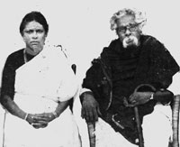

E. V. Ramasamy married when he was 19, and had a daughter who lived for only 5 months. His first wife,Nagammai, died in 1933. E.V. Ramasamy married for a second time in July 1948.His second wife, Maniammai, continued E. V. Ramasamy's social work after his death in 1973, and his ideas were then advocated by Dravidar Kazhagam. 